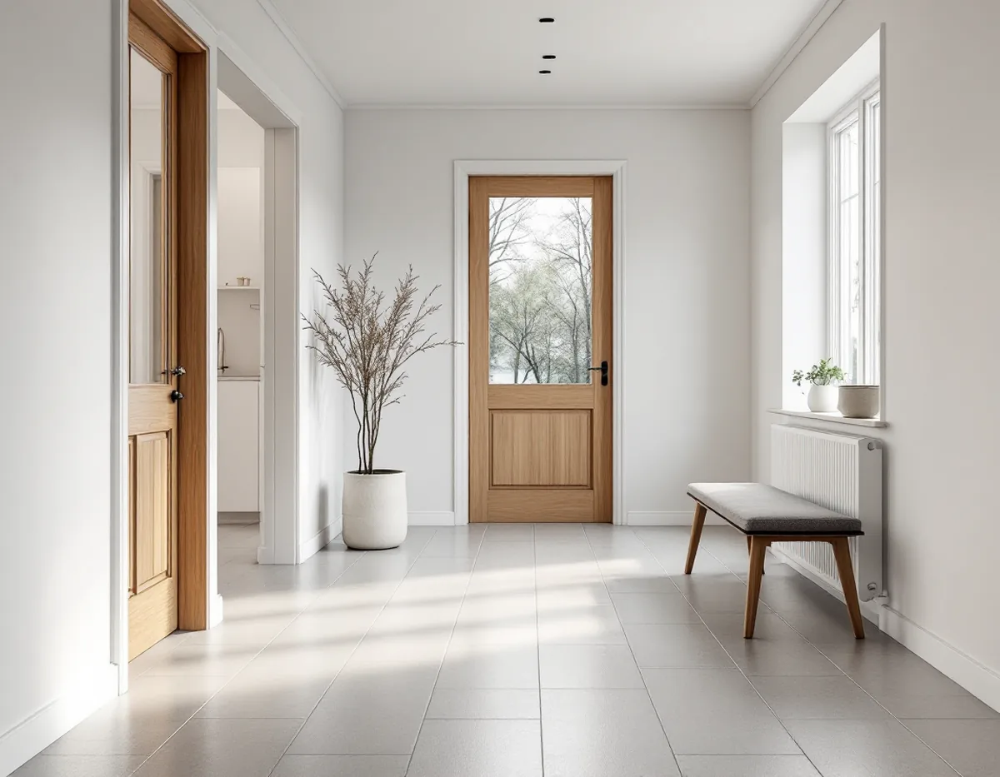

Platsbesök
Vi tittar på golvlagren, mäter höjder vid trösklar och kontrollerar planheten.

Täby är till största delen byggt efter 1970, och många hus har nu sina andra eller tredje golv.
Beskriv jobbet kort.
Något blev fel. Kontrollera uppgifterna eller ring 08 12 410 276.
Vi tittar på jobbet på plats innan du får offert.
Du ser vad som ingår och vad det kostar.
Vi drar av ROT direkt och sköter ansökan.
Geal Entreprenad AB, Bromma. Org.nr 559303-7566.
Ofta är det hallen och köket som står på tur, gärna med klinker och golvvärme. Geal Entreprenad AB lägger klinker, parkett och trägolv och slipar befintliga golv i hela Täby, med gratis platsbesök och skriftligt kostnadsförslag.
Kommunens riktlinjer Kulturmiljöer i Täby visar åldersfördelningen i byggnadsbeståndet: av de daterade byggnaderna har merparten tillkommit efter 1970, och bebyggelsen från före 1920 utgör bara några få procent. Riktlinjerna jämför med landet som helhet, där 13 procent av bostadsbeståndet är byggt till och med 1920 och 67 procent efter 1960. Under 1970-talet byggdes många radhus och grupphusområden i Täby kyrkby och Byle.
I Skarpäng och Gribbylund bestod områdena så sent som i början av 1970-talet av en blandning av fritidshus och permanentvillor. Därefter växte täta villaområden fram, främst med hus från 1970- och 1980-talen på mindre tomter, ofta i dubbla rader med skafttomter. Kring Gribbylund, Löttingelund och Hästängen är villorna till största delen typhus, och här finns också flera områden med radhus och kedjehus.
Ett typhus från den tiden har ofta fått nya golv i omgångar. Det är vanligt att hitta olika material i olika rum och flera lager på varandra, och det påverkar både höjder vid trösklar och vad som måste rivas.
En hall där familjen kommer in med snö och grus är ett klassiskt ställe för klinker, och många vill ha golvvärme under. Byggkeramikrådet anger att golvvärmen ska startas försiktigt efter plattsättningen och att temperaturen inte ska höjas med mer än 3 °C per dygn. Slingornas läge ska dessutom dokumenteras, vilket underlättar om till exempel en toalett senare ska monteras.
Där ett tätskikt behövs ska golvvärmesystemet ligga under det. Avjämningsmassan över slingorna läggs i den tjocklek som leverantören anger. Ska golvvärmen ingå i ett nytt badrum blir det en del av en badrumsrenovering i Täby.
Plattor i stora format blir allt vanligare även i villor. Ju större platta, desto mer syns ett ojämnt underlag. Byggkeramikrådet anger tillåtna fogsprång – hur mycket en platta får sticka upp över grannen – till 0,7 mm för plattor med en största sida på 10 cm och 2,0 mm för plattor på 60 × 60 cm.
Därför rivs gammalt golv ned till ett stabilt underlag, och svackor jämnas ut innan plattsättningen börjar. Ligger det gamla klinkergolvet fast och plant kan det ibland vara kvar under det nya, men det avgör vi först när vi har kontrollerat det.
Ska ett vardagsrum i ett hus på betong få trägolv eller parkett behöver betongen vara tillräckligt torr. Golvbranschen varnar för att fukt som stängs inne mellan betong och golvmaterial kan bryta ned lim och golv, och att det kan ge emissioner som i värsta fall orsakar huvudvärk, yrsel eller astmaliknande besvär.
En mätning av en fuktkontrollant inom RBK visar om golvet kan läggas direkt eller om det behövs annan fuktspärr eller väntetid. Vi samordnar mätningen och följer leverantörens anvisningar för lim. Läs mer om golvtyper under golvläggning.
Många hus i Täby har fått parkett vid ett tidigare golvbyte. Är det en flerskiktsparkett med tunt toppskikt kan det vara svårt att slipa den mer än lätt, och har den redan slipats en gång finns kanske inte mycket kvar. Massiv parkett eller stavparkett har mer trä att ta av.
Vi tar reda på vilken typ det är genom att lyfta en tröskel eller list. Går golvet att slipa är det ofta det enklaste sättet att få ett fräscht golv utan rivning. Går det inte lägger vi ett nytt golv, flytande eller limmat beroende på underlaget.
I ett kedjehus eller radhus där flera rum ligger i rad kan ett nytt golv läggas genom hela planet utan trösklar, om det tillåts av golvtypen. Ett flytande golv behöver då rörelseutrymme mot väggar och ibland en fog i dörröppningar. Det planerar vi utifrån leverantörens anvisningar.
Vi tittar på golvlagren, mäter höjder vid trösklar och kontrollerar planheten.
Vi går igenom klinker, parkett eller trägolv utifrån rummets slitage och om golvvärme ska ingå.
Rivning, avjämning, eventuell fuktmätning och läggning anges som separata poster.
Gamla lager tas bort, underlaget görs plant och golvvärmen läggs ut.
Plattor sätts eller golvet läggs, och fogar, lister och trösklar görs klart.
Vi går igenom hur golvvärmen ska startas och hur golvet sköts.
Att byta golv räknas som rotarbete i småhus. Byter du en plastmatta mot trägolv räknar Skatteverket det som ett förbättringsarbete, som också ger avdrag. Avdraget gäller arbetet, inte plattor, parkett, lim eller resor.
Du får dra av 30 procent av arbetskostnaden, högst 50 000 kr per person och år. Rot och rut får tillsammans uppgå till högst 75 000 kr. Avdraget görs direkt på fakturan.
Antalet golvlager som ska rivas och hur mycket underlaget behöver jämnas ut väger tungt, särskilt inför stora plattor. Golvvärme, plattformat, mönster och antalet trösklar påverkar också. Vi gör ett gratis platsbesök och lämnar ett skriftligt kostnadsförslag.
Parkett, trägolv, klinker och slipning.
Golvläggning i Stockholm →Takbyte, takbesiktning och plåtarbeten.
Takläggare i Täby →Näsbypark, Viggbyholm och Gribbylund.
Takrenovering i Täby →Grupphus, radhus och villor.
Köksrenovering i Täby →Trösklar, lister och dörrar.
Snickare i Täby →Panel, puts och isolering.
Fasadrenovering i Täby →Detaljplan, Q-märkning och VA-inkoppling.
Attefallshus i Täby →Kulör per kvarter och provytor.
Fasadmålning i Täby →Villastäder och grupphus i Täby.
Fönsterbyte i Täby →Gårdarnas fönster, kulör och spröjs.
Fönsterrenovering i Täby →Laga och slipa golvet efter en riven vägg.
Golvslipning i Täby →Stationsvillor, funkis och grupphus i Täby.
Plåtslagare i Täby →Betongpannor, kedjehus och tegelvillor.
Takbyte i Täby →Ny tapet mot lister och foder.
Tapetsering i Täby →Byle, kyrkbyn och detaljplanen.
Tillbyggnad i Täby →Ett hus som går att bo kvar i.
Totalrenovering i Täby →Eller ring 08 12 410 276, mån–fre 08–17.
Beskriv jobbet kort.
Något blev fel. Kontrollera uppgifterna eller ring 08 12 410 276.